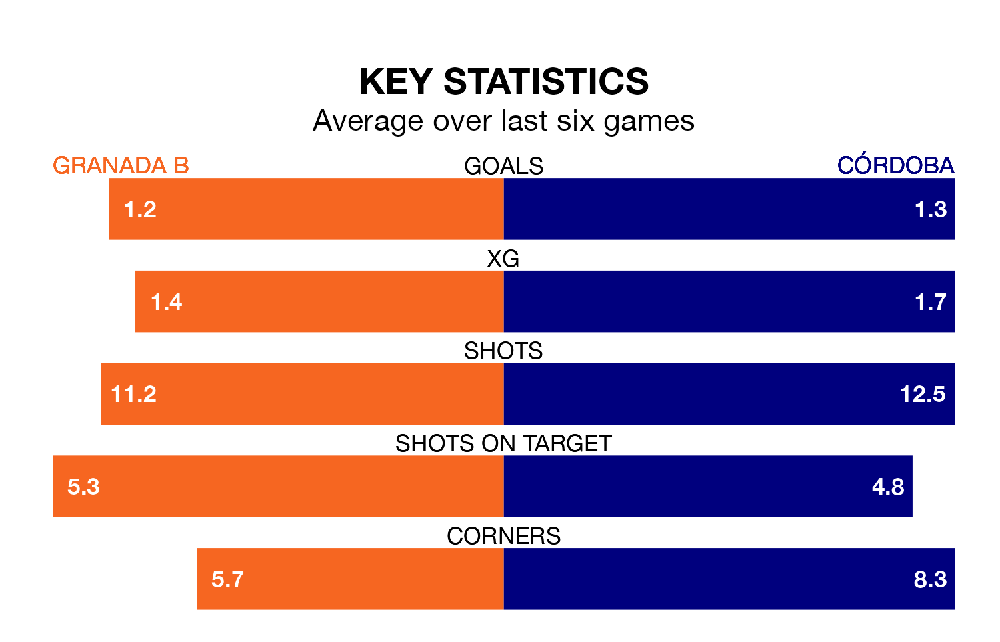

Struggling Granada B face Córdoba at the Estadio Miguel Prieto Garcia on Sunday looking to build on a win in their last league outing.
After securing all three points with a 1-0 victory over CD Alcoyano on April 28, Granada B sit bottom of Primera Division RFEF Group 2.
They travel to play a Córdoba side second in the standings, who also won their last match, 1-0 against Málaga CF.
With 61 goals in 34 games so far this season, Córdoba are the league's second-highest scorers with 1.8 goals per game. And they are conceding fewer than average, letting in 28 goals at a rate of 0.8 per game.
Granada B, meanwhile, are below average scorers, with 0.7 goals per game, compared to a league average of 1.1. They have conceded 1.5 goals per game.
In Carlos Marín Tomás, the visitors can rely on one of the league's safest pair of hands. He has kept 10 clean sheets in his 21 appearances this season, and only one other 'keeper – Recreativo de Huelva's Rubén Ramos González – has been able to prevent the opposition scoring on more occasions in Primera Division RFEF Group 2.
In the home side's net, Adri López has two clean sheets in 10 games. He has conceded a goal every 60 minutes, more than twice as often as the 135 minutes between goals for Marín Tomás.
Granada B are in mixed form in Primera Division RFEF Group 2, with three wins and three losses from their last six games.
With four wins and a draw over that period, Córdoba's form is better – they have taken 13 points from 18, compared to Granada B's nine.
In the last five years, Granada B and Córdoba have played each other on five occasions. Córdoba won three of them and they drew twice.
On average, Granada B scored 0.6 goals and Córdoba 1.8 in those matches.
Their last meeting was on September 30, when Córdoba won 3-0 at home.
Updated: 10:44 (UTC), 30/04/24